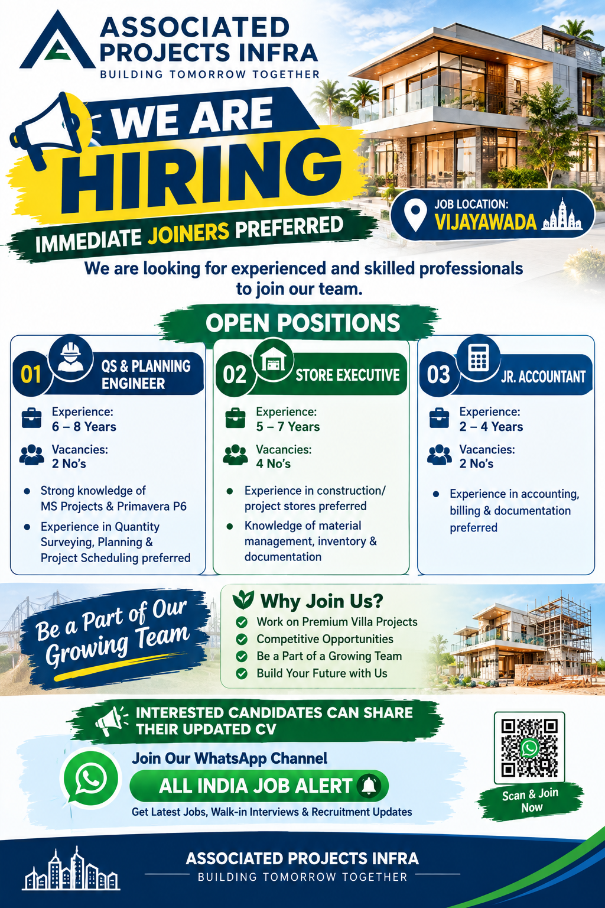

📢 All India Job Alert WhatsApp Channel
Latest private jobs, construction jobs, infrastructure jobs, engineering vacancies, accounting jobs and recruitment updates ke liye hamara WhatsApp Channel join karein.
JOIN ALL INDIA JOB ALERTAll India Job Alert
Associated Projects Infra Recruitment 2026
Associated Projects Infra has announced new career opportunities for experienced and skilled professionals at its project location in Vijayawada, Andhra Pradesh. The recruitment is focused on candidates who can contribute to project planning, quantity surveying, stores management and accounting activities. Immediate joiners are preferred, making this opportunity particularly suitable for candidates who are currently available to join a new assignment.
The current openings include QS & Planning Engineer, Store Executive and Junior Accountant. These positions cover different areas of construction and infrastructure project operations. Candidates with relevant experience should carefully review the requirements of each position before submitting their updated CV.
The company has mentioned that the job location is Vijayawada, Andhra Pradesh. Candidates who are comfortable working at the Vijayawada project location can consider the available opportunities. Applicants should ensure that their experience and skills match the requirements of the position for which they are applying.
This recruitment can be useful for professionals who want to continue their careers in the infrastructure and construction sector. Project teams require proper planning, quantity management, material control and financial documentation, and each of the advertised roles plays an important part in maintaining smooth project operations.
Current Open Positions
01. QS & Planning Engineer
Experience: 6–8 Years
Vacancies: 2 Nos.
The QS & Planning Engineer position is suitable for professionals having 6 to 8 years of relevant experience. Candidates should have a strong understanding of quantity surveying and project planning. Knowledge of MS Projects and Primavera P6 is specifically preferred for this position.
Candidates with experience in quantity surveying, planning, project scheduling and construction project coordination can consider this opportunity. Applicants should clearly mention their experience with project planning software and their previous responsibilities in their updated CV.
Professionals working in this role may be involved in quantity measurement, project scheduling, progress monitoring, planning documentation and coordination with project teams. Candidates should highlight only their genuine experience and technical skills.
02. Store Executive
Experience: 5–7 Years
Vacancies: 4 Nos.
The Store Executive position is open for candidates with 5 to 7 years of experience. Experience in construction or project stores is preferred. Candidates should have knowledge of material management, inventory control and documentation.
Construction project stores are responsible for receiving, recording, storing and issuing materials required for site activities. Candidates with previous experience in construction material management should mention their responsibilities, inventory experience and documentation skills in their resume.
Applicants should be familiar with maintaining proper records and coordinating with site and procurement teams wherever such responsibilities were part of their previous work. Relevant project store experience can be an advantage during the recruitment process.
03. Junior Accountant
Experience: 2–4 Years
Vacancies: 2 Nos.
The Junior Accountant position is suitable for candidates with 2 to 4 years of relevant experience. Experience in accounting, billing and documentation is preferred.
Candidates should have practical knowledge of accounting-related activities and project documentation. Applicants should clearly mention their previous accounting experience, billing responsibilities and documentation work in their updated CV.
Professionals with construction or infrastructure project accounting experience can highlight their previous project exposure and actual responsibilities. Candidates should ensure that all information in their resume is accurate and verifiable.
Vacancy Summary
| Position | Experience | Vacancies |
|---|---|---|
| QS & Planning Engineer | 6–8 Years | 2 |
| Store Executive | 5–7 Years | 4 |
| Junior Accountant | 2–4 Years | 2 |
Job Location
Location: Vijayawada, Andhra Pradesh
The advertised positions are based at the Vijayawada project location. Candidates should consider the location and their availability before submitting their application.
Immediate Joiners Preferred
Associated Projects Infra has specifically mentioned that immediate joiners will be given preference. Candidates who are available to join at short notice can highlight their availability clearly in their resume or while communicating with the recruitment team.
Candidates who are currently serving a notice period should mention their expected joining date honestly. Providing accurate information about availability helps the recruitment team understand the candidate's situation and process the application appropriately.
Why These Roles Are Important in Infrastructure Projects
Infrastructure and construction projects depend on proper coordination between planning, quantity surveying, stores, procurement, accounting and site execution teams. A QS & Planning Engineer helps project teams understand quantities, schedules, progress and planning requirements. The Store Executive supports material availability and maintains important inventory records, while the Junior Accountant contributes to financial and billing documentation.
Because these functions are connected, professionals working in these departments need to maintain accurate records and communicate effectively with other project teams. Candidates with relevant project experience can use their practical knowledge to contribute to smooth day-to-day operations.
The available vacancies therefore provide opportunities for professionals from different areas of construction project management. Candidates should apply for the role that best matches their qualifications, experience and previous responsibilities.
How to Prepare Your CV
Before applying, candidates should prepare an updated and professional CV. The resume should contain the candidate's full name, contact details, educational qualification, total experience, current or latest designation, previous companies, project experience and relevant technical skills.
QS & Planning Engineer candidates should clearly mention experience with MS Projects, Primavera P6, quantity surveying, planning and project scheduling wherever applicable. Store Executive candidates should highlight construction-store experience, inventory management, material documentation and coordination responsibilities.
Junior Accountant candidates should mention accounting, billing, documentation and other relevant financial responsibilities. If the candidate has worked on construction or infrastructure projects, that project experience should be clearly mentioned.
Who Can Apply?
Professionals who meet the required experience criteria and have relevant project experience can apply. The recruitment information specifies 6–8 years for QS & Planning Engineer, 5–7 years for Store Executive and 2–4 years for Junior Accountant.
Candidates should not submit inaccurate information. Experience details should be genuine and should match the candidate's actual professional background. Applicants are encouraged to carefully read the requirements before sharing their resume.
How to Apply
Interested and eligible candidates can share their updated CV with the HR department using the contact details provided below.
Candidates should mention the position they are applying for and clearly highlight their relevant experience in the resume. Immediate joiners are preferred according to the recruitment announcement.
👤 Contact Person:
Mr. Ch. Srinivas
Sr. Executive – HR Department
📞 Mobile:
9700475703
📧 Email:
hr@associatedinfra.com
📍 Job Location:
Vijayawada, Andhra Pradesh
📲 Get More Job Updates
Vijayawada jobs, Andhra Pradesh jobs, construction vacancies, engineering jobs, accounting jobs, store jobs and latest private recruitment updates ke liye All India Job Alert WhatsApp Channel join karein.
JOIN WHATSAPP CHANNELAll India Job Alert
Important Information for Candidates
Candidates should verify the latest vacancy status, selection process, joining conditions and other employment details directly with the recruitment team before making final arrangements.
Applicants should use the contact details provided in the recruitment information. Candidates should never pay money to any person in exchange for a job, interview or selection.
Never share OTPs, passwords, banking PINs or other sensitive financial information with unknown persons claiming to represent a company.
Frequently Asked Questions
What company is hiring?
Associated Projects Infra is hiring experienced professionals for project-related positions.
Where is the job location?
The job location mentioned in the recruitment information is Vijayawada, Andhra Pradesh.
Which positions are available?
The current openings are QS & Planning Engineer, Store Executive and Junior Accountant.
How many vacancies are available?
There are 2 vacancies for QS & Planning Engineer, 4 vacancies for Store Executive and 2 vacancies for Junior Accountant, making a total of 8 advertised vacancies.
Are immediate joiners preferred?
Yes. The recruitment announcement specifically states that immediate joiners will be given preference.
How can candidates apply?
Candidates can share their updated CV with Mr. Ch. Srinivas, Sr. Executive – HR Department, using the provided mobile number 9700475703 or email address hr@associatedinfra.com.
Final Words
Associated Projects Infra has announced career opportunities for professionals in Vijayawada, Andhra Pradesh. The recruitment includes QS & Planning Engineer, Store Executive and Junior Accountant positions with different experience requirements.
Candidates with 6–8 years of experience can apply for the QS & Planning Engineer position, candidates with 5–7 years can consider the Store Executive position, and candidates with 2–4 years can consider the Junior Accountant opportunity. Immediate joiners are preferred.
Interested candidates should prepare an updated CV and clearly mention their relevant project experience, skills, current designation and availability. Applications can be shared with the HR contact provided in the How to Apply section.
For more private job vacancies, construction jobs, engineering opportunities and recruitment updates, candidates can also join the All India Job Alert WhatsApp Channel.